Drei Bergzeichnungen für eure Hochzeit
Originale SVG-Entwürfe auf Kraftpapier · Die Live-Website bleibt unverändert.
A · Feine Federzeichnung
Luftige Linien, zurückhaltende Felsschraffur und viel Freiraum. Leicht und elegant.

NATALIE & PAUL
12. 06. 2027 ♥ Pfarrers Älpele
B · Alpine Berggravur
Dichte, fein abgestufte Schraffuren im Stil einer klassischen Bergillustration. Mein Favorit zur Einladung.

NATALIE & PAUL
12. 06. 2027 ♥ Pfarrers Älpele
C · Alpenpanorama mit Hütte
Sanftere Bergformen, Tannen und eine kleine Almhütte. Persönlich und gemütlich – keine ortsgetreue Ansicht.

NATALIE & PAUL
12. 06. 2027 ♥ Pfarrers Älpele